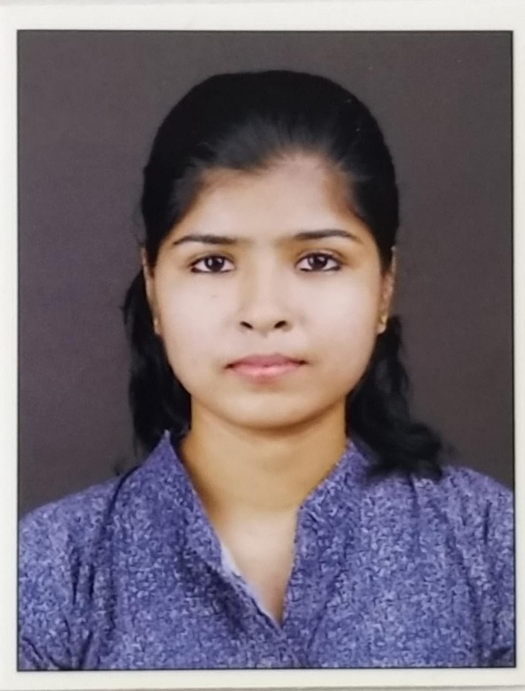

Riya Raju

Summary
I am a hardworking and dedicated individual with experience in software testing and web development.
Education
-
Bachelor of Technology(B.Tech)-Electronics and Communication Engineering - Christ College of Engineering (2017-2021)
Work Experience
-
Assistant System Engineer - Tata Consultancy Services(TCS)
July 2021 - Present
- Done unit testing,system Integrated testing and functional testing as part of ETL Project
- Partnered closely with client regarding their testing requirements
- Done API testing as part WEM Reforms Program
Skills
- Software Testing: ⭐️⭐️⭐️⭐️⭐️
- API Testing: ⭐️⭐️⭐️⭐️⭐️
- Frontend Development: ⭐️⭐️⭐️
Awards and Certifications
- Received On the spot Team Award - ETL Uplift Project(2021)
- Associate Google Cloud Certification
Others